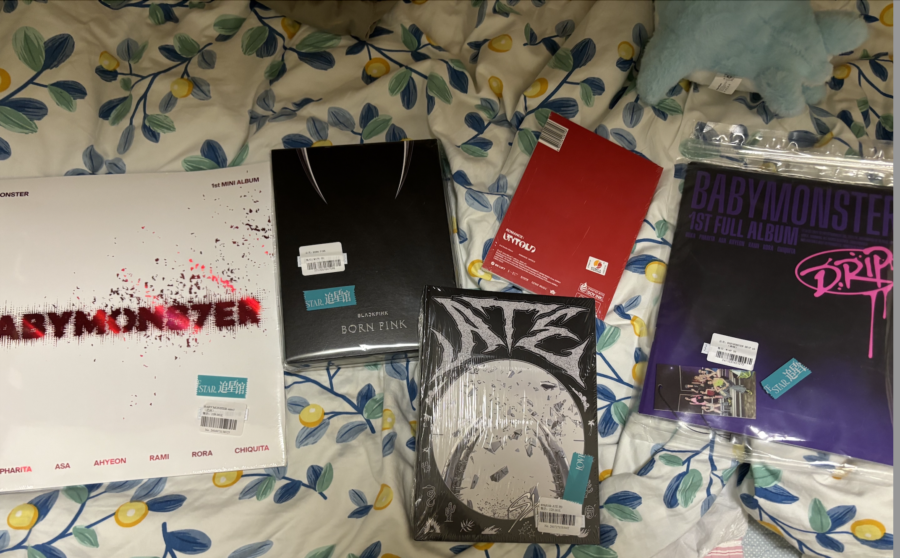
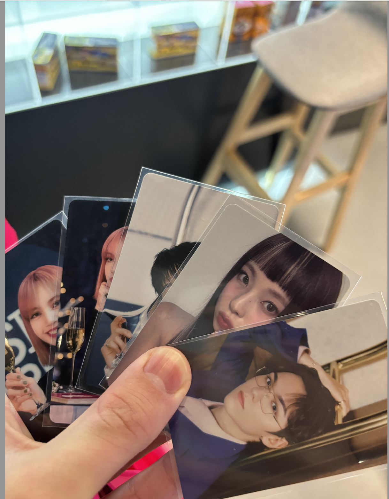
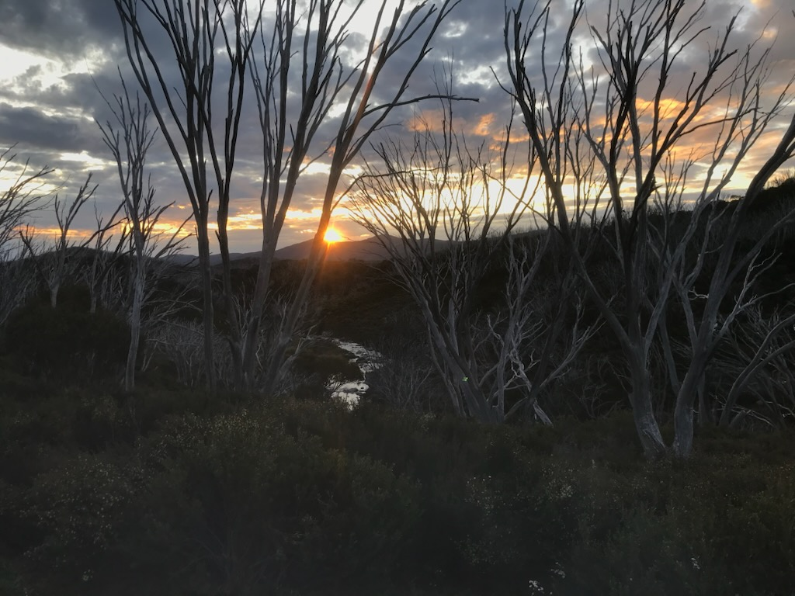

Derek Wen
About Me
Hello, I'm Derek, a 2nd Year Advanced Maths & Computer Science student from Sydney and I'm looking forward to joining DevSoc's Training Program for 2026 T3! I've been part of DevSoc since 2025, first being in Events Subcom in 2025 and Sponsorships Subcom this year. Outside of DevSoc, I'm an avid K-Pop fan and enjoy trying new food :)
K-Pop
I've been a K-Pop fan (borderline stan) for quite a while and I enjoy a range of groups including Blackpink, Babymonster, BTS, Stray Kids and Hearts2Hearts (I'm not bad), so you can't make me act right (iykyk, otherwise I know you hate it). I'm always open to new song recommendations and I easily enjoy listening to new groups from yapping about K-Pop with fellow fans (can't deny us). Apart from the top-tier music and performances that K-Pop offers, I look up to multiple idols as a source of inspiration to self-improve and was mostly listening to K-Pop songs while making this website.


Fooding Around & Travelling
If there's 2 things that goes well when I'm alone, it's listening to K-Pop while trying new food and exploring the world around me. I'm quite obsessed with spending time trying new food to the point I got branded as the subcom foodie last year and am always open to recommendations. I also enjoy researching about top-quality food and travel spots both in Australia and internationally and have been guilty of spending days in my exam block researching away travel plans.
Sports
I enjoy playing both tennis and badminton (imo it's not that hard to adjust) and played both quite frequently in high school. I haven't played in a while but am always open to joining in a social session when I'm available. I also enjoy watching F1 and UEFA Champions League.
Crypto
Another sidequest I enjoy doing is researching and (occasionally throwing money) into a mix of cryptocurrencies from Bitcoin to memecoins. While I've had mixed success in trying that, it's fun to learn about a wide range of financial investments.
Projects
At the moment, I don't have a project but I'm looking forward to being selected as a Trainee in 2026 T3 to develop my full-stack development skills while building my first project!
Skills
Although I currently don't have a project, my current technical skills include:
- Programming Languages: C, JavaScript, Python, TypeScript, Java
- Other tools: Git
Fun Facts
- I enjoy sleeping and am an early bird who usually sleeps at 10:30pm
- I enjoy taking walks and exploring the world around me in my spare time
- I got talked into joining DevSoc in 2025 while tutoring high school students
- I have a selfie with a UFC fighter even though I have never watched a UFC fight
-
Every calendar year (since 2022) I have good sunset pic from regional NSW I use for a profile pic
Below is my pic from 2022 taken on a Duke of Ed hike in the Snowy Mountains:

As a K-Pop fan, I have had my share of unique habits from being addicted to K-Pop (read: not being addicted enough), and here's some of the more sensible ones:
- I wake up to K-Pop alarms almost every morning, otherwise I don't use alarms to wake up which has annoyed people (Boy, does it look like I could care?)
- I am prone to having K-Pop playing in my head when I tutor others and do uni exams (I couldn't even care...less!)
- I enjoy sliding K-Pop references into my work and uni assignments (hahahaha)
- A K-Pop album I recently got into was Hearts2Hearts' Lemon Tang (넌 my lemon tang)